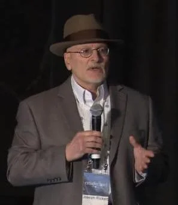
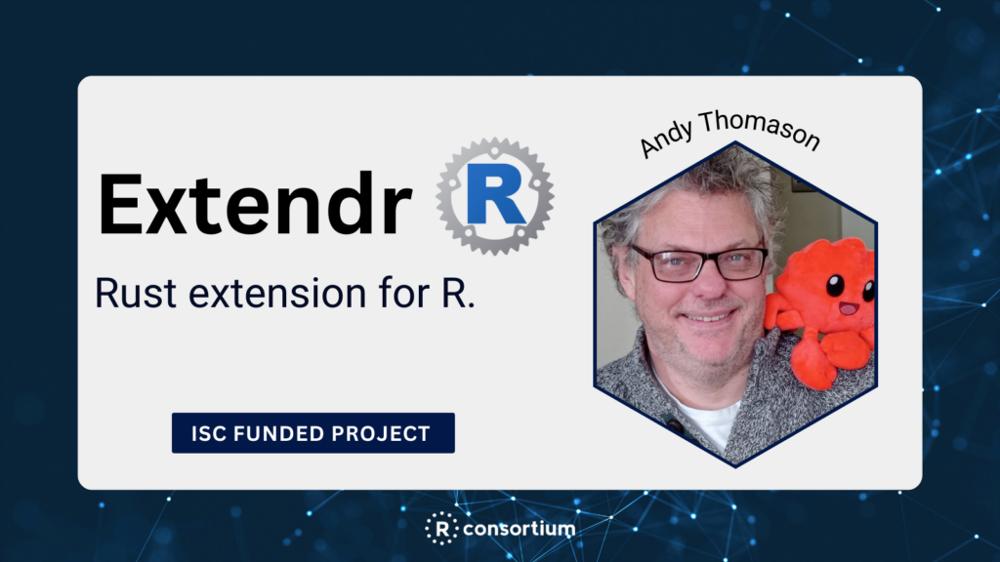
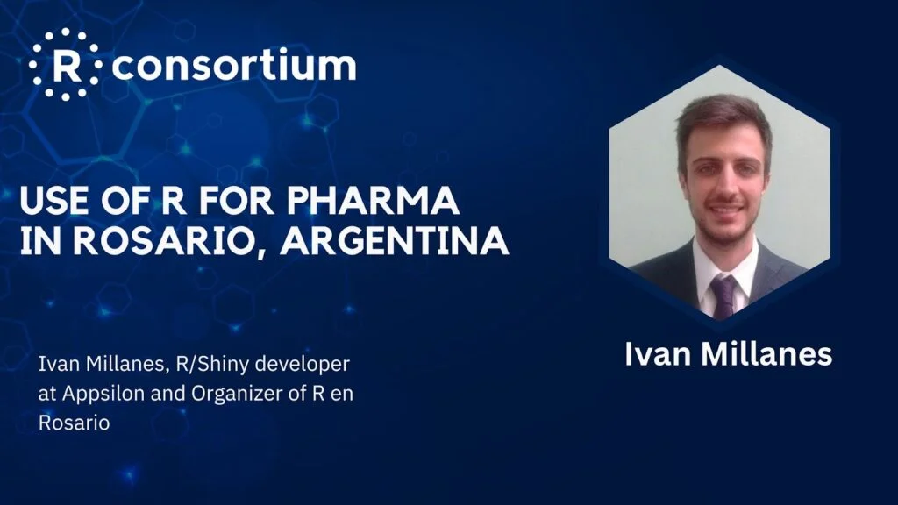

Welcome!
Hello from the R Consortium! This quarterly newsletter puts together the latest updates about our organization’s activities, the progress each working group has made, upcoming R related events, and recordings of past events. In short, all you need to know about the R Consortium! We hope you enjoy it.
You haven’t read the previous newsletter? You can find them on the RC website here. Any suggestions for our next newsletter? Feel free to let us know here. You’d like to sign up to automatically receive the newsletter? Click here.
📣 New Executive Director Announcement – Welcome back, Joseph Rickert!

The R Consortium is pleased to announce that Joseph Rickert has been appointed to the position of Executive Director reporting directly to the Board of Directors.
Joseph has been active in the R Community since he joined Revolution Analytics in 2009 and has held prominent, community-facing positions at both the R Consortium and RStudio (now renamed posit). He is deeply involved in multiple R Consortium technical working groups, is an organizer of the Bay Area useR Group (BARUG), and has been on the R/Medicine conference organizing committee since the first conference in 2018. Joseph served on the R Consortium Board of Directors from August 2016 to July 2023, serving as Chair from 2020.
Welcome, Joseph, to your new position!
First Publicly Available R-Based Submission Package Submitted to FDA (Pilot 3)

The R Consortium is pleased to announce that on August 28, 2023, the R Submissions Working Group successfully submitted an R-based test submission pilot 3 package through the FDA eCTD gateway! The FDA CDER staff are now able to begin their evaluation process. All submission materials can be found at:https://github.com/RConsortium/submissions-pilot3-adam-to-fda
Read more about this big accomplishment and work on Pilot 4 here.
ISC Funded Projects Improving the R Ecosystem

R Consortium Funded Project Extendr Provides Rust Extensions for R
Andy Thomason, code performance consultant and lecturer at the University of London covering programming, physics and AI courses focused on game development, created an open source project to add Rust’s performance, reliability, and productivity to R. Andy created the Extendr package, a safe and user-friendly R extension interface for using Rust. The project was supported by a grant from the R Consortium.
R User Groups Are Active Around the World!
Use of R in Non-Profit Social Policy Research in New York

Use of R for Pharma in Rosario, Argentina

Utilizing R for Reproducible Open Science Research in Tucson, Arizona

ISC Call for Proposals Wrap Up

Main announcement: Grants For R Language Infrastructure Projects Available Now!
The ISC is back with its second round of proposal calls and grant awards for 2023! The main objective is to strengthen the R ecosystem’s technical infrastructure and serve the R community better. Second Grant Cycle: September 1 to October 1, acceptance by November 1, contract by December 1.
If you missed the cycle this time, be sure to keep an eye out for next grant cycle in 2024!
Working groups updates
| Change in Leadership and Ongoing activities In late August Joseph Korszun stepped down as Lead of R Certification Working Group. Joseph had contributed extensively in organizing and leading the efforts to compile and prepare for alpha release of Clinical Analyst examination. He had been critical in forming this working group and contributed extensively to ensure a Minimal Viable Product. Uday Preetham Palukuru has taken over the activities as lead. Joseph Rickert continues to provide guidance to the working group. Ongoing activities include:Clarification of various R Certification Exam levels expected to be part of final releaseClean-up of GitHub issues and re-prioritization of outstanding issues Completion of reviewer feedback regarding existing questionnaire pertaining to various exam levelsDiscussion with Certiverse on using .yml files for hosting draft alpha examIdentification of select candidates to preview the alpha release and gather feedback |
Uday Preetham Palukurupreetham.palukuru@merck.com Joseph Rickert Joseph.Rickert@procogia.com Further information: https://github.com/RConsortium/R-Certification-WG) |
R Tables for Regulatory Submission (RTRS)
| Tables in Clinical Trials with R The version 1.0, the published version of the ebook, Tables in Clinical Trials with R is available at link: https://rconsortium.github.io/rtrs-wg.In this book we present various aspects of creating tables with the R language (R Core Team 2023) to analyze and report clinical trials data. The working group will present its work in R/Pharma in October. |
Gabe Becker: gabembecker@gmail.com Adrian Waddell: adrian.waddell@gene.com Joseph Rickert: joseph.rickert@rstudio.com Working Group github repository: https://github.com/RConsortium/rtrs-wg |
R Validation Hub
| Regulatory R Repository working group In July, the working group presented its work in the Basel R conference. The recording is available here: https://youtu.be/qqfteqh9kXw?si=2sJwP079Tj0toHY4 In summary, after collecting requirements and gathering consensus on key assumptions to build on, the team is now getting ready to start its first MVP. Would you like to join? Check out our Benefits of participating PDF link |
Coline Zeballos: coline.zeballos@gmail.com |
| The R Validation Hub was selected to give a talk at the upcoming R/Pharma virtual conference on October 24-26. Register here and see you there! | Coline Zeballos: coline.zeballos@gmail.com Juliane Manitz: juliane.manitz@emdserono.com |
| The slides from Doug’s Posit::conf 2023 Pharma Round Table presentation are available here: https://pharmar.github.io/events-positconf2023/#/title-slide | Doug Kelkhoff: doug.kelkhoff@gmail.com |
Submissions
| Pilot 3 submission The R Consortium is pleased to announce that on August 28, 2023, the R Submissions Working Group successfully submitted an R-based test submission pilot 3 package through the FDA eCTD gateway! The pilot 3 test submission is an example of an all R submission package following eCTD specifications. These include the installation and loading of the proprietary {pilot3} R package and other open-source R packages, R scripts for the analysis data model (ADaM) datasets from pilot 3 and tables, listings, figures (TLFs) from pilot 1, analysis data reviewer’s guide (adrg), and other required eCTD components. The working group also began working on a pilot 4 project to explore the use of novel technologies such as Linux containers and WebAssembly software to bundle a Shiny application into a self-contained package in order to facilitate a smoother process for transferring and executing the application. Stay tuned for more about pilot 4 in the future. https://www.r-consortium.org/announcement/2023/09/11/first-publicly-available-r-based-submission-package-submitted-to-fda-pilot-3 |
Ning Leng: lengn@genecom Joseph Rickert: joseph.rickert@gmail.com Further information: https://github.com/RConsortium/submissions-wg |
| OBJSXP Now that we have a release on CRAN, the focus has shifted to finishing and merging the OBJSXP work into base R. |
Michael Lawrence Hadley Wickham Further information:https://github.com/RConsortium/OOP-WG |
Upcoming events – R Consortium will be there, will you?
LatinR 2023 – Taking place in Montevideo, Uruguay from October 18-20, 2023
R government – In-person and Virtual from October 19-20, 2023
R/Pharma 2023 – Virtual from October 24th to 26th with workshops the week prior
You’ve missed a recent event?
R/Basel, a useR! regional Conference July 21st, 2023, Roche Basel Campus
New York R Conference – Held workshops from July 11-12 and Conference from July 13-14 2023
Cascadia R Conference – Taking place in Seattle, Washington from Saturday, August 19, 2023
Joint Statistical Meetings (JSM) – August 5 – 10, 2023, in Toronto, Canada
R Project Sprint August 30 – September 1, 2023, Warwick UK
Posit::conf including workshop: Leveraging & Contributing to the Pharmaverse for Clinical Trial Reporting in R was held this week in Chicago with Roche folks involved – see teaser video here https://www.youtube.com/watch?v=iOOiNG2t-Dc
Follow the R Consortium on Social Media – We need you!
In this section, we highlight a few opportunities for getting more involved with the R Consortium.
| Help promote the R Consortium message around the globe - Follow @RConsortium on Twitter (https://twitter.com/RConsortium), @RConsortium@fosstodon.org on Mastodon, and R Consortium on LinkedIn (https://www.linkedin.com/company/r-consortium) - We’re working on updating and improving the R Consortium YouTube account (https://www.youtube.com/c/RConsortium). There’s great content there, from events, with talks and presentations covering many R topics. - Like, comment, and share/retweet R Consortium content on an ongoing basis – new content appears frequently!    |
Participate in an R Consortium working group - Example: R in Business Working Group (https://github.com/RConsortium/RBusiness), is an R Consortium working group promoting and supporting the R programming environment and the R ecosystem in business practices and business research - R Consortium Working Groups… - Help develop a community-based collaboration platform - Organize and sponsor of events -Research relevant topics in depth Develop openly available courses/tutorials - Develop and maintain R packages  |